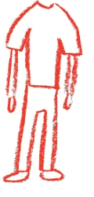
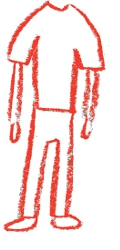

about
The Carnegie Mellon International Film Festival, sponsored by the Humanities Center, is proud to present its 2013 theme, Faces of Media. From March 21st - April 13th, audiences will have the opportunity to enjoy Pittsburgh premiere screenings of over a dozen brand new and award-winning films from Germany, the United Kingdom, Denmark, Romania, Austria, Finland, Sweden, the Ukraine, Egypt, Iran, Japan, China, and the United States.From the young protestors in Egypt who utilized social media apps like Facebook to mobilize a revolution to an American community in the near future that maintains social contact through constant live video feeds on individual home computers, the compelling real-life and fictional faces introduced by these films will provoke thoughtful questions about how our global media impacts society and vice versa. Contemporary issues concerning the societal effects of rapid globalized media development, such as violence, (in)justice, identity transformation, voyeurism, obsession, networking, and alienation, will be highlighted in the films through the unique constructs of language, imagery, and narrative.
The festival is also pleased to present a new permanent component this year, "Goodman Faces of Work" – a memorial tribute to Dr. Paul Goodman (1938-2012). A world-renowned filmmaker, psychologist, and Carnegie Mellon professor, Paul was an active proponent of introducing global theory and a wide variety of multimedia elements into the classroom. This annual component will incorporate some of Paul’s films along with international films related to Paul’s professional focus: the theme of work. Whether it is the story of a 21-year-old woman from the Balkans, who struggles to stay in her village in rural Sweden after losing her factory job or the slow yet victorious rise of entrepreneur Jack Ma in his journey toward building the first Chinese Internet startup company at the dawn of the new millennium, the documentaries and feature films within the Faces of Work series will emphasize the current human challenges and achievements of diverse workers worldwide.
Whether you are fluent in all things related to new media or prefer to observe the constantly changing technology trends from a distance, the 2013 Carnegie Mellon International Film Festival: Faces of Media will provide you with the perfect chance to learn more about our evolving world of globalized communication through a cinematic lens. We look forward to seeing your faces in the audience!
attend
Buy Tickets to Danube Hospital Here!Feb. 22, Fri.
6:30-8:30pm: Film Screening: Danube Hospital (Donauspital). (Dir. Nikolaus Geyrhalter, Germany, 2012)
Presented by the Carnegie Mellon Faces International Film Festival
$5 Seniors + Students, $8 Others. Ticket can be purchased online.
Danube Hospital
Total: $8.00
program
Danube HospitalDirected by Nikolaus Geyrhalter; Austria | 2012 |75 min.
February 22nd, 6:30pm at McConomy Auditorium, Carnegie Mellon University
Presented in conjunction with the Imperfect Health Exhibition at Miller Gallery.
Pittsburgh Premiere
“Geyrhalter’s tripod-mounted, impeccably-framed images capture the interactions of human and machine that have come to define the hospital experience in the 21st century” - The Hollywood Reporter
Awards
*Nominated for 2012 East Silver Caravan (Prague) Silver Eye Award
In Danube Hospital, sci-fi and avant-garde meet modern medicine. The setting is Austria’s Donauspital, where birth, death, and gore constitute day-to-day activity. Geyrhalter’s exquisite shot-compositions aestheticize each unit of the hospital microcosm. One might forget that what they are seeing is documentary footage—imagery of robot-like transporters and state-of-the-art computer technology echo futuristic, science fiction films of the past century (think 2001: A Space Odyssey, but the spaceship is actually a hospital). Scenes of meat-cutting in the cafeteria and in the cadaver-dissection room evoke the same horror. No unit is granted too much camera time; each is interdependent on the rest, and functions as an integral combination of human and machine. Media screens play a significant role—it is, after all, through television monitors that we view the stitching of internal organs and an eye surgery. Media is not merely a commercial entity or art form—Danube Hospital illustrates its scientific function, its penetration into multiple realms of the contemporary, digitized era.
Danube Hospital will be preceded by a showing of Dr. Paul Goodman’s Nurse. As part of the Goodman Faces of Work series, the short film examines the daily work-life of one of the health industry’s most essential components.
Healthy refreshments provided by Hofbräuhaus prior to the screening.
About the Director
Nikolaus Geyrhalter was born in Vienna, Austria in 1972. In 1994, he founded his own production company titled Nikolaus Geyrhalter Filmproduktion (NGF). His award-winning works include Das Jahr nach Dayton (1997), Pripyat (1999), Elsewhere (2001), and Our Daily Bread (2005).
Purchase Tickets here!
participate
Requirements- Subtitles
SUBMISSIONS MUST INCLUDE ENGLISH SUBTITLES. Contact us if this presents a problem. Short Film Length
The maximum runtime of each submission is 15 minutes. Number of Submissions
A maximum of two short films may be submitted per director. They may both be on one or two DVDs. Submission fee
$20. The fee remains twenty dollars whether you are submitting one or two films. Submission Format
Either NTSC or PAL format on DVD is acceptable. If this presents a problem, you may submit a data DVD with your film(s) as a file. Submission Form
Click here to download the submission form. Deadline
All entries must be submitted by February 28, 2013. Submissions received after that date will not be eligible for review. Screening
Selected submissions will not only be played in the Student Short Film Competition session, but will also be screened before feature length films during the broader International Film Festival and posted on our YouTube channel.
Submissions
THE 2013 CARNEGIE MELLON INTERNATIONAL STUDENT SHORT FILM FESTIVAL
Faces of Media
ATT: Jolanta Lion
Baker Hall A 60-F
5000 Forbes Avenue
PITTSBURGH, PA 15213-3890
UNITED STATES OF AMERICA
Please email Jingya Liu at jingyal@andrew.cmu.edu or Jolanta Lion at jola@cmu.edu for payment methods, submission details, or any other questions concerning the short film competition
updates
contact
For Festival information, please contact:Jolanta Lion
Festival Director
Email: jola@cmu.edu
Phone: (412) 445-6292
Mailing Address:
The 2013 Carnegie Mellon International Film Festival: Faces of Media
Carnegie Mellon University
The Humanities Center
Baker Hall A 60-F
5000 Forbes Avenue
Pittsburgh, PA 15213-3890
USA
For Humanities Center information, please contact:
David Shumway
Humanities Center Director
Email: shumway@cmu.edu
Phone: (412) 268-7176
Mailing Address:
The 2013 Carnegie Mellon International Film Festival: Faces of Media
Department of English
Carnegie Mellon University
Baker Hall 259
5000 Forbes Avenue